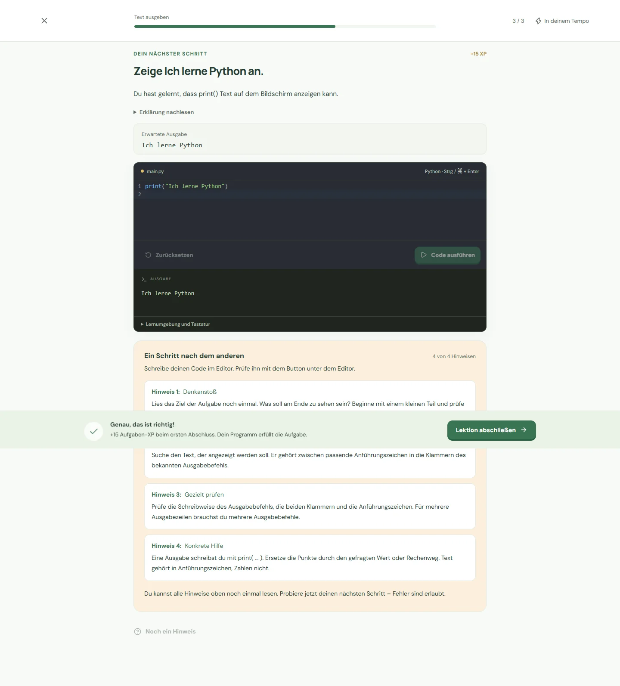

Codegarten.
Der nächste Schritt ist
dein eigener Code.
Eine kostenlose Lernplattform für PC und Laptop. Sie begleitet Anfänger von geführten Übungen bis zu selbstständigen Lösungen. Mit jedem Schritt gibt es weniger Hilfen und mehr Raum zum Ausprobieren.

- Lernbereiche
- 9
- Lektionen
- 324
- Projekte
- 39
- Automatisierte Tests
- 450+
Dokumentierter Projektstand vom 13. Oktober 2026. Die Testzahl stammt aus dem Projektbericht; die Codegarten-Tests wurden für diese Portfolio-Aktualisierung nicht erneut ausgeführt.
Das Lernmodell
Weniger Vorgaben.
Mehr selbst lösen.
Eine Antwort erkennen und selbst eine Lösung schreiben sind zwei verschiedene Dinge. Das ist der Ausgangspunkt von Codegarten.
- 01Verstehen & erkennenWas macht der vorhandene Code?
- 02Code ergänzenDie fehlenden Teile einsetzen.
- 03DebuggenFehler finden und beheben.
- 04Code verändernEine Lösung an neue Anforderungen anpassen.
- 05Selbst schreibenEine eigene Lösung entwickeln.
- 06Projekte bauenMehrere Schritte zusammenbringen.
- 07Im leeren Editor startenOhne vorgegebenen Code lösen.
Die neun Lernbereiche
| Lernbereich | Units | Lektionen | Projekte |
|---|---|---|---|
| Python | 8 | 53 | 7 |
| JavaScript | 10 | 55 | 7 |
| HTML & CSS | 11 | 47 | 6 |
| SQL | 8 | 31 | 4 |
| Java | 9 | 30 | 4 |
| C# | 9 | 30 | 4 |
| C++ | 9 | 30 | 3 |
| Git & GitHub | 7 | 23 | 2 |
| Linux & Terminal | 7 | 25 | 2 |
Technik, Funktionen & aktuelle Grenzen
Code ausführen
Python über Pyodide und JavaScript laufen isoliert im Browser. HTML/CSS hat eine isolierte Live-Vorschau, SQL eine SQLite-Übungsdatenbank. Java, C# und C++ nutzen statische Codeprüfung, keine vollständige Nutzer-Runtime. Git und Linux sind Simulationen.
Fortschritt erhalten
Local-first-Speicherung, Gastmodus, optionale Accounts mit PostgreSQL, Offline-Nutzung nach dem Paketdownload sowie Backups und Synchronisierung. Konfliktlösung und idempotente Verarbeitung sollen Fortschrittsverlust und doppelte XP verhindern.
Lernen begleiten
XP, Levels, Streaks und Lernpfade motivieren. Mastery, Wiederholungen und Transfer-Aufgaben unterscheiden geführte Erfolge von selbstständiger Anwendung. Ein Nachweis der Lernwirkung mit echten Anfängern steht noch aus.
Meine Arbeit daran
Produktidee, siebenstufiges Lernmodell, Anforderungen und Entwicklungssteuerung. Mit ChatGPT/Codex habe ich die Umsetzung iteriert, Fehler untersucht und Ergebnisse anhand von Tests und eigenen Durchläufen geprüft.
React · TypeScript · Vite · Pyodide · SQLite · PostgreSQL · Docker
Gelernt: Lernlogik, mehrere Ausführungsumgebungen und Datenspeicherung als zusammenhängendes System denken.